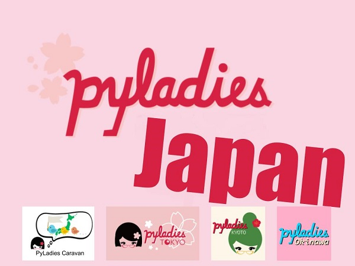

鉄は熱いうちに打て
=============================
PyCon JP 2019 に参加しました¶
2019-09-17
今年もPyCon JPに参加しました。 アルコールにやられて記憶も定かではありませんが、参加したブログです。
私は所属企業のブースとPyLadies Japanのポスターを担当しました。
今年は、日本のPyLadies支部として東京、京都、沖縄、そのほかCaravanも合同でポスターを作成しました。 各コミュニティーの力作ぞろいで、とても内容の濃いポスターになりました！
ポスターをここで発表しますね。
タイトルとPyLadiesの紹介
PyLadies 京都
PyLadies 沖縄

PyLadies 東京
PyLadies Caravan
PyLadies JapanのTシャツを作ることになり、色の投票も行いました。 結果は、 カロライナブルー になりました。
他にはいろいろなスポンサーのブースを見て回ったり、おやつ食べたりしました。
閉会式ではドローンで記念撮影がありました。

（このブログ書いているの11月です）
（なんでこんなに書くの遅くなったの？って話ですが、）
（１日目に酔っぱらって転んで、ケガして心が折れたからです。）
（飲みすぎには気をつけましょうね。）
今年もトークには落ちましたが楽しい２日間でした。来年もまた参加したいです。